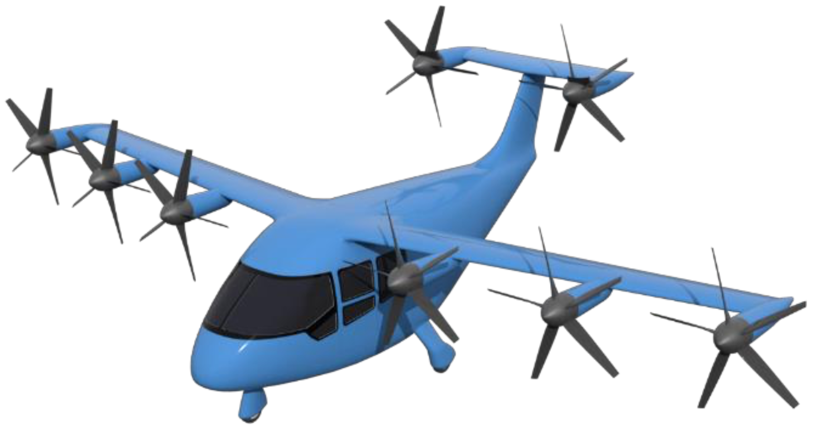

The subject of this course is aircraft and rocket design. You will learn some of the basics of aerodynamics, structures, stability, propulsion, and performance as applied to flight vehicle design. In other words, you will be exposed to the fundamentals of aerospace engineering. A major component of the course is a design project.
 This year will be focused on eVTOL aircraft design. Many startups, companies, research labs, and universities around the world are working on this challenge. There are a lot of concepts out there, and we’ll have a chance to explore this design space. Along with traditional aircraft design principles we’ll need to learn some about batteries, rotor noise, and other topics that are important in this application.This is an emerging application so expect some messiness as we grapple with new analysis approaches, challenging requirements, and uncertain results.
Below is a draft textbook I developed. Also linked below are some of my YouTube videos. Both of these resources are based on prior year’s material so won’t yet reflect some of the new eVTOL content.
Book: Flight Vehicle Design
Videos: YouTube